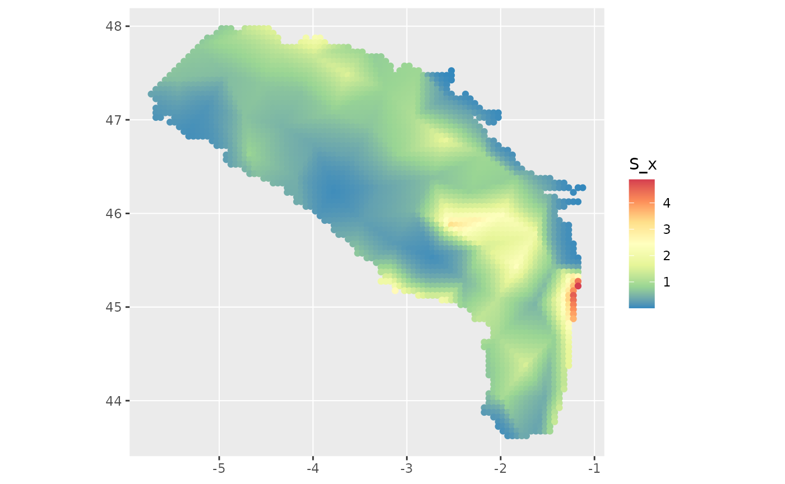

dev-generate-graphs.Rmd
library(FishMap)fm_generate_graphs() : generate output graphs
This function will generate graphs of the model predictions. It will
use as input the data generated from fm_fit_model() and
provide the predictive plot within a named list. Is the sampling process
is activated (samp_process = 1), an additionnal graphic for
eta result will be generated.
#' \donttest{
# loading `fm_fit_model()` outputs
fm_fit_model_outputs <- readr::read_rds(
system.file("examples", "part2_output_small.rds",
package = "FishMap")
)
# run function
fm_generate_graphs(fm_model_results = fm_fit_model_outputs)
#> Running step 4 -plot graphs-
#> Step 4 -plot graphs-: 0.446 sec elapsed
#> $pred_plot
#' }